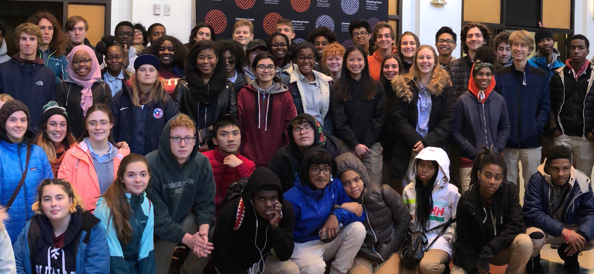

The 11th grade United States History class of Washington Latin Public Charter School, supported by generous donors, went to New York City on October 18, 2018. The purpose of this field trip was to have these young minds reflect on significant themes that run through modern American History: the importance of perseverance and sacrifice. We focused on three places: the Tenement Museum, the neighborhood of Harlem and the World Trade Center 9/11 Memorial. By attending the Broadway show Come From Away, we extended the reflection on the sacrifices of September 11, 2001. The students were asked to consider the struggles faced by immigrants coming to the United States during the late 19th and early 20th centuries; the obstacles overcome by African Americans seeking a new destiny in the North after 300 years of slavery and Jim Crow; and the sacrifices made by firefighters and police officers during the extreme trials of September 11, 2001. The trip was a profound success. We are so grateful to the donors who made this journey possible. Without you, it would have been a distant fantasy. You helped students see tangible evidence of perseverance and sacrifice. These qualities are the sure underpinnings of any nation that would make its mark on history.
